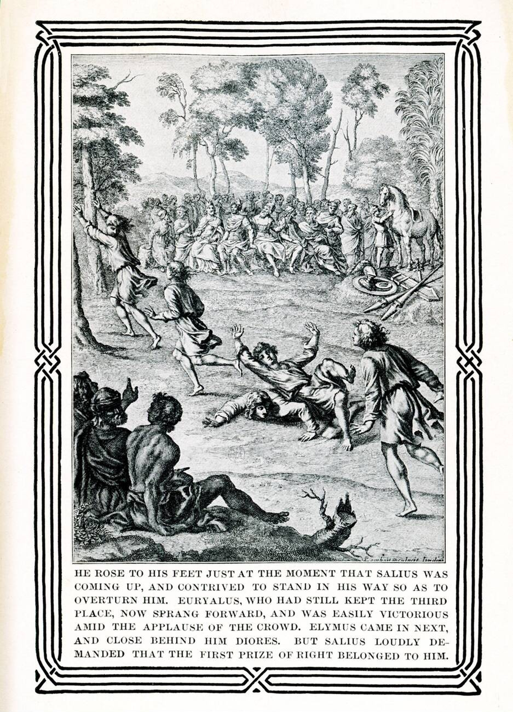

Энеида · песнь 5 из 12
Игры в Сицилии

Кратко
Флот возвращается в Сицилию в годовщину смерти Анхиса, и Эней устраивает пышные погребальные игры. В гонке кораблей соперничают Гиас, Клоанф, Сергест и Мнесфей; в беге фаворит Низ поскальзывается в крови жертвенных быков и нарочно сбивает соперника, чтобы победу взял его юный друг Эвриал, — первое появление дружбы, которая позже кончится общей смертью. Старый силач Энтелл побеждает в кулачном бою самонадеянного Дареса и в довершение одним ударом убивает быка. В стрельбе из лука горящая стрела Акеста, не долетев до цели, чудесным образом вспыхивает прямо в воздухе — знамение, которое каждый толкует по-своему. Завершает игры конная выучка мальчиков во главе с Асканием — «троянская игра», которую позже переймёт сам Рим. Тем временем Юнона через Ириду, принявшую облик троянки Берои, подстрекает измученных скитаниями женщин поджечь корабли; ливень, посланный Юпитером в ответ на молитву Энея, спасает бо́льшую часть флота, но четыре судна гибнут. По совету старца Навта и явившейся тени Анхиса Эней оставляет уставших спутников — стариков, женщин, всех, кто не хочет продолжать путь, — строить город Акесту, а сам с сильнейшими отправляется дальше, чтобы прежде похода в Италию спуститься к отцу в подземный мир через Кумскую пророчицу. В открытом море бог сна Сомн усыпляет и роняет за борт кормчего Палинура — необходимая жертва «одна жизнь за многих».
Главные моменты
- Низ жертвует своей победой ради друга Эвриала — дружба, которая аукнется в песни IX.
- Энтелл побеждает не только Дареса, но и быка — сила без надобности в пощаде.
- Вспыхнувшая в полёте стрела Акеста — знамение, которое каждый толкует по-своему.
- Троянская игра мальчиков — обряд, который римляне пронесут через века.
- Поджог кораблей троянками — усталость от скитаний прорывается бунтом, а не только гневом Юноны.
- Гибель кормчего Палинура в открытом море — тихая жертва, которую требует судьба.
Значение
Пауза между странствиями и войной: подведение итогов пути, расставание со слабейшими и подготовка к сошествию в Аид.